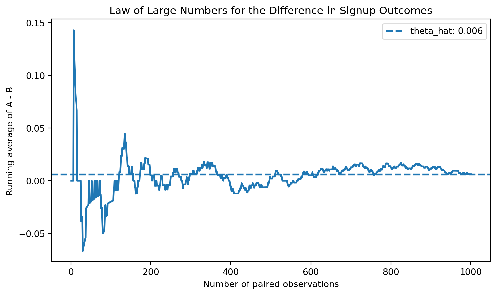
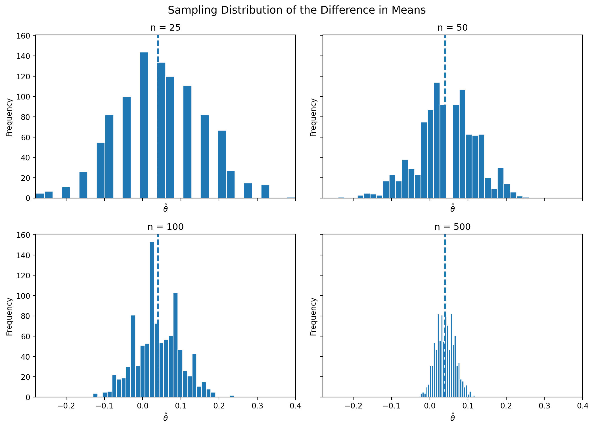

np.random.seed(123)
n = 1000
pi_A = 0.22
pi_B = 0.18
theta_true = pi_A - pi_B
A = np.random.binomial(1, pi_A, n)
B = np.random.binomial(1, pi_B, n)
theta_hat = A.mean() - B.mean()
theta_hatnp.float64(0.005999999999999978)Simulating Key Ideas from Classical Frequentist Statistics
Alex Matrajt Frid
April 14, 2026
Imagine you run a website with a homepage designed to convert visitors into newsletter subscribers. A key feature of that page is a call-to-action (CTA), a short phrase encouraging users to sign up.
You are considering two alternatives:
To figure out which version works better, we can run an A/B test. In an A/B test, visitors are randomly assigned to see one of the two versions, and we compare the signup rates across the groups. Random assignment is important because it helps ensure that any difference we observe is due to the CTA wording rather than differences in the visitors themselves.
In what follows, I use a simulated A/B test to illustrate several core ideas from classical frequentist statistics, including the Law of Large Numbers, bootstrap standard errors, the Central Limit Theorem, hypothesis testing, and the connection between a two-sample test and linear regression.
Each visitor either signs up or does not, so each outcome can be modeled as a draw from a Bernoulli distribution. If a visitor signs up, we record a 1; if not, we record a 0. The Bernoulli parameter \(\pi\) represents the probability of signup.
Because the CTA shown to a visitor may influence that probability, we allow the parameter to differ by group:
The quantity we care about is the difference in signup rates:
\[ \theta = \pi_A - \pi_B \]
A natural estimator is the difference in sample means:
\[ \hat\theta = \bar{X}_A - \bar{X}_B \]
Since the data are binary, each sample mean is just the observed signup proportion. That means \(\bar{X}_A = \hat\pi_A\) and \(\bar{X}_B = \hat\pi_B\), so \(\hat\theta\) is simply the difference in observed conversion rates.
In a real A/B test, we would not know the true values of \(\pi_A\) and \(\pi_B\) ahead of time. But for this exercise, it is useful to choose them ourselves so that we can study how our estimator behaves when we know the truth.
Suppose the true signup probabilities are:
Then the true treatment effect is:
\[ \theta = 0.22 - 0.18 = 0.04 \]
Below I simulate 1,000 visitors for each CTA.
np.float64(0.005999999999999978)The observed difference in this simulated sample is close to, but not exactly equal to, the true value of 0.04. That is exactly what we should expect from random sampling.
The Law of Large Numbers tells us that as the sample size grows, the sample mean converges to the population mean. In this setting, that means the difference in sample means, \(\hat\theta\), should get closer to the true difference \(\theta\) as we collect more observations.
To visualize this, I compute the element-wise differences between the CTA A and CTA B draws, then plot the cumulative average of those differences as the number of observations increases.
diffs = A - B
cum_avg = np.cumsum(diffs) / np.arange(1, n + 1)
fig, ax = plt.subplots(figsize=(9, 5))
ax.plot(np.arange(1, n + 1), cum_avg, linewidth=2)
ax.axhline(theta_hat, linestyle="--", linewidth=2, label=f'theta_hat: {theta_hat:.3f}')
ax.set_title("Law of Large Numbers for the Difference in Signup Outcomes")
ax.set_xlabel("Number of paired observations")
ax.set_ylabel("Running average of A - B")
ax.legend()
plt.show()
At the beginning of the sample, the running average moves around a lot. With only a few observations, randomness plays a large role. As the sample grows, however, the estimate settles down and moves closer to the true difference of 0.04.
This is the key practical lesson of the Law of Large Numbers: noisy early results should be treated cautiously, while larger samples tend to produce more stable and reliable estimates.
A point estimate tells us what happened in our sample, but it does not tell us how precise that estimate is. To quantify uncertainty, we need a standard error and, from that, a confidence interval.
One flexible way to estimate the standard error is the bootstrap. The bootstrap works by repeatedly resampling from the observed data with replacement, recomputing the statistic each time, and then looking at how much those resampled statistics vary.
Here, I repeatedly resample the A group and the B group, each with replacement, compute the difference in means for each bootstrap sample, and then use the standard deviation of those bootstrap estimates as the bootstrap standard error.
np.float64(0.01843677503452471)For comparison, there is also an analytical standard error formula for the difference in two independent Bernoulli sample means:
\[ SE(\hat\theta) = \sqrt{\frac{\hat\pi_A(1 - \hat\pi_A)}{n_A} + \frac{\hat\pi_B(1 - \hat\pi_B)}{n_B}} \]
| Method | Standard Error | |
|---|---|---|
| 0 | Bootstrap | 0.01844 |
| 1 | Analytical | 0.01802 |
The two standard errors should be very close. That is reassuring: the bootstrap is recovering nearly the same uncertainty estimate as the closed-form formula.
Using the bootstrap standard error, a 95% confidence interval is:
\[ \hat\theta \pm 1.96 \times SE_{boot} \]
| Estimate | Bootstrap SE | 95% CI Lower | 95% CI Upper | |
|---|---|---|---|---|
| 0 | 0.006 | 0.01844 | -0.03014 | 0.04214 |
This interval gives a plausible range of values for the true difference in signup rates. If the interval excludes zero, that suggests a real difference between the two CTAs. If it includes zero, the data are also consistent with no effect.
The Central Limit Theorem (CLT) tells us that, for sufficiently large samples, the sampling distribution of the sample mean becomes approximately Normal, even when the underlying data are not Normal. Since our estimator is a difference in sample means, the CLT suggests that the sampling distribution of \(\hat\theta\) should also become approximately bell-shaped as sample size increases.
To show this, I repeatedly simulate the A/B test at four sample sizes: \(n \in {25, 50, 100, 500}\). For each sample size, I generate 1,000 values of \(\hat\theta\) and plot their histograms.
def simulate_theta(n, pi_A, pi_B, reps=1000, seed=123):
rng = np.random.default_rng(seed)
out = np.empty(reps)
for i in range(reps):
A_sim = rng.binomial(1, pi_A, n)
B_sim = rng.binomial(1, pi_B, n)
out[i] = A_sim.mean() - B_sim.mean()
return out
sample_sizes = [25, 50, 100, 500]
sim_results = {n_i: simulate_theta(n_i, pi_A, pi_B, reps=1000, seed=100 + n_i) for n_i in sample_sizes}
For the smallest sample sizes, the histograms are somewhat rough and irregular. As the sample size grows, the distribution of \(\hat\theta\) becomes smoother and more bell-shaped. This is the Central Limit Theorem in action.
That result matters because it justifies many of the Normal-based tools used in classical inference, including confidence intervals and hypothesis tests.
Now that we have seen why \(\hat\theta\) is approximately Normal for large samples, we can use that result to conduct a formal hypothesis test.
We test:
\[ H_0: \theta = 0 \qquad \text{vs.} \qquad H_1: \theta \neq 0 \]
The null hypothesis says that the two CTAs perform equally well. The alternative says that they differ.
To test this, we standardize our estimate:
\[ z = \frac{\hat\theta - 0}{SE(\hat\theta)} \]
Why do this?
Although people sometimes casually call this a “t-test,” this setup is more naturally viewed as a large-sample z-test. The classical t-distribution arises from Normal data with an estimated variance. Here the outcomes are Bernoulli, not Normal, and the justification comes from the Central Limit Theorem. In large samples, though, the standard Normal and t distributions are very similar, so the practical conclusions are usually the same.
| Estimate | SE | z statistic | p-value | |
|---|---|---|---|---|
| 0 | 0.006 | 0.01802 | 0.33295 | 0.73917 |
A small p-value means that the observed difference would be unlikely if the true difference were really zero. In that case, we would reject the null hypothesis and conclude that the CTA wording likely affects signup behavior.
The two-sample comparison above is mathematically equivalent to a simple linear regression. This is useful because it shows that the same regression tools used elsewhere in applied statistics can also analyze experiments.
To set this up, stack the data into one table with:
Then estimate:
\[ Y_i = \beta_0 + \beta_1 D_i + \varepsilon_i \]
The coefficients have a simple interpretation:
So the regression coefficient on the treatment indicator is exactly the treatment effect.
df = pd.DataFrame({
"Y": np.concatenate([A, B]),
"D": np.concatenate([np.ones(n), np.zeros(n)])
})
X = sm.add_constant(df["D"])
model = sm.OLS(df["Y"], X).fit()
reg_table = pd.DataFrame({
"Coefficient": model.params.index,
"Estimate": model.params.values,
"Std. Error": model.bse.values,
"t statistic": model.tvalues.values,
"p-value": model.pvalues.values
}).round(5)
reg_table| Coefficient | Estimate | Std. Error | t statistic | p-value | |
|---|---|---|---|---|---|
| 0 | const | 0.201 | 0.01275 | 15.76592 | 0.00000 |
| 1 | D | 0.006 | 0.01803 | 0.33278 | 0.73933 |
The coefficient on D should match the difference in means computed earlier. Its test statistic and p-value should also be very similar to the values from the two-sample test, though small differences can appear because standard OLS uses a slightly different variance calculation unless you explicitly adjust it.
This equivalence matters because the regression framework generalizes easily. Once you understand the simple A/B test as a regression, it becomes straightforward to add control variables, interactions, or additional treatment groups.
Suppose your boss does not want to wait until the full sample is collected. Instead, she wants to test for significance after every 100 visitors per group and stop the experiment as soon as one result is significant at the 0.05 level.
This is a problem under classical frequentist statistics.
A single hypothesis test conducted at significance level \(\alpha = 0.05\) has a 5% chance of a false positive when the null hypothesis is true. But if you repeatedly test the data as it accumulates, each peek creates another opportunity to get lucky noise and incorrectly reject the null. The overall probability of making at least one false rejection becomes larger than 5%.
To demonstrate this, I simulate a world where there is no true difference between the CTAs:
\[ \pi_A = \pi_B = 0.20 \]
In each simulated experiment, I generate 1,000 observations per group. After every 100 observations, I compute the z-statistic and p-value. If any of the 10 peeks is significant at the 0.05 level, I count that experiment as a false positive. Then I repeat the whole process 10,000 times.
def one_peeking_experiment(n_total=1000, step=100, pi=0.20, alpha=0.05, rng=None):
if rng is None:
rng = np.random.default_rng()
A = rng.binomial(1, pi, n_total)
B = rng.binomial(1, pi, n_total)
for k in range(step, n_total + 1, step):
A_k = A[:k]
B_k = B[:k]
theta_hat_k = A_k.mean() - B_k.mean()
pi_A_k = A_k.mean()
pi_B_k = B_k.mean()
se_k = np.sqrt(
pi_A_k * (1 - pi_A_k) / k +
pi_B_k * (1 - pi_B_k) / k
)
if se_k == 0:
continue
z_k = theta_hat_k / se_k
p_k = 2 * (1 - norm.cdf(abs(z_k)))
if p_k < alpha:
return 1
return 0
rng = np.random.default_rng(2026)
n_experiments = 10000
false_positives = np.array([
one_peeking_experiment(rng=rng) for _ in range(n_experiments)
])
empirical_fp_rate = false_positives.mean()
empirical_fp_ratenp.float64(0.194)| Scenario | False positive rate | |
|---|---|---|
| 0 | Single test at alpha = 0.05 | 0.050 |
| 1 | 10 peeks at the data | 0.194 |
The empirical false positive rate under repeated peeking is much larger than 0.05. That means that even when there is truly no difference between the CTAs, repeated interim testing makes it far too easy to incorrectly declare a winner.
In practice, this is why experimenters should either commit to a fixed sample size in advance or use formal sequential testing methods designed for interim analysis. Otherwise, “peeking” turns random fluctuations into apparently significant results and undermines the validity of the test.
This A/B test example illustrates several foundational ideas from classical frequentist statistics.
A/B tests may look simple on the surface, but they rely on deep statistical ideas. Understanding those ideas makes it much easier to design better experiments and interpret results responsibly.